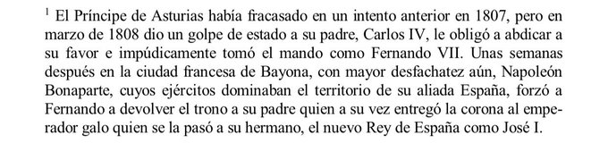

Los Hilos de Monik
Guerras Napoleónicas, masones e independentismo cubano
Publicado el 10 de septembre de 2020 - 23 tweets - Hilo original en Twitter
1
Seguramente has escuchado hablar del Efecto Mariposa.
¿Y si te dijera que - hasta cierto punto- se puede trazar una línea que conecta las guerras napoleónicas con el independentismo cubano... y con los masones?
2
En 1808 Napoleón Bonaparte instaló a su hermano José en el trono español. ¿Cómo? Pues logró que los reyes Carlos IV y su hijo Fernando VII abdicaran en Bayona, y luego los encarceló en Francia.
Esto dio inicio a la Guerra de los Seis Años o Guerra de Independencia Española.
3
La compañía Pinillos Izquierdo (dueña del barco) reemplazó a casi toda la tripulación tras darse un brote de gripe española en el último viaje. Esta nueva tripulación no conocía bien el mar Caribe.
Además, a la compañía ya se le habían hundido otros dos barcos recientemente.
4
Para hacer el cuento corto: los josefinos firmaron en Bayona la primera constitución para España en 1808, y los fernandinos convocaron a Cortes extraordinarias en 1810. Y a todas estas, batallas van y vienen, y ciudades son ocupadas por las tropas napoleónicas.
5
La noticia de la ocupación francesa y la guerra, provocó en Cuba indignación contra los franceses.
Inicialmente, las autoridades reconocieron como gobierno provisional a la Junta de Sevilla, que luego fue Junta Central Suprema, y más adelante, Consejo de Regencia.
6
Mientras, en Santiago de Cuba, el 20% de la población era francesa. El rechazo de los españoles locales fue creciendo. Y empezaron a circular panfletos anónimos que acusaban al gobernador de la ciudad, Sebastián Kindelán, de querer entregarla a los bonapartistas.
7
En marzo de 1809 Someruelos anunció la expulsión de los franceses y la confiscación de sus posesiones. Días después, en La Habana se dieron asaltos y saqueos de tiendas, talleres y hogares de inmigrantes franceses.
Para agosto, +4,000 franceses habían emigrado a New Orleans
8
Camaguey, la 3ra ciudad más grande y sede de la Audiencia Real, también estaba revuelto.
En 1809 un pasquín anónimo catalogaba a los españoles como "los mismos carniceros que asesinaron a Hatuey", pidiendo la emancipación. Es considerado el 1er manifiesto separatista de Cuba.
9
José Bonaparte (a quien en Cuba llamaban "Pepe Botella") comenzó a enviar agentes a América. Pero Someruelos, de quien se dice tenía una red de espías muy eficiente, interceptó al más famoso de estos: el mexicano Manuel Rodríguez.
Curioso: el padrastro de Someruelos...
10
...era Consejero de José Bonaparte; y supuestamente Rodríguez traía una carta para este. Pero ¿casualidad? tras su arresto, ¡el sobre se encontró vacío!
El mexicano fue condenado a muerte. Primera muerte por "infidencia contra la Patria" registrada en Cuba, por cierto.
11
En medio de esta situación, en 1809 y 1810 tienen lugar dos conspiraciones asociadas a los masones, y que más tarde influyeron en otras como la de Aponte (1812) y del Águila Negra (1829)
Todo comenzó por el puerto. ¿Recuerdas la guerra en España? Pues la Junta Central...
12
...prohibió a Cuba comerciar con barcos que no fuesen españoles para así generar más ingresos para la guerra.
Esto ocasionó una protesta de los comerciantes criollos: 137 de ellos firmaron una carta enviada al Ayuntamiento, pidiendo la revocación de esta medida.
13
Al no ser atendida su solicitud, un grupo decidió tomar acciones más radicales.
En octubre de 1809 arrestan a 10 de ellos, acusados de "infidencia y masonería".
Te preguntarás ¿Era ilegal la masonería? Pues sí. Desde 1751 un Real Decreto la prohibía.
14
Pero como todo, en Cuba era "tolerada". Fueron los franceses emigrados de Santo Domingo quienes fundaron las primeras logias en Santiago y La Habana. Al ser expulsados en 1808, sólo quedó una: el Templo de las Virtudes Teologales... a la cual pertenecían los conspiradores.
15
Pues bien, esta primera conspiración separatista fue frustrada por una delación.
Francisca, la esposa del organizador principal Román de la Luz (pariente del poeta Zenea), le contó de los planes a su confesor, quien a su vez, la habría facilitado a la Capitanía General.
16
En el posterior juicio, se les acusa de «una conspiración contra el Gobierno para constituirlo independiente»
Pero el caso se complicó por la importancia de las personas involucradas:
- el Tte de Navío español José Peñaranda
- el decano de la Universidad San Jerónimo...
17
...Dr. Manuel García Coronado
- y el hacendado Román de la Luz
Más allá de anónimos y pasquines subversivos, la evidencia era nula. Al final, Someruelos envió la documentación al Consejo de Indias para que tomaran una decisión. Por la guerra, les tomó 17 meses responder.
18
Mientras esperaban por el veredicto de Cádiz, Someruelos dio libertad condicional a los 3 acusados. Y autorizó el comercio con barcos de EE.UU., "caso por caso".
Todo parecía volver a su cauce. Pues no. En octubre de 1810, tras un ciclón devastador, se dieron nuevos arrestos.
19
La misma noche en que Someruelos velaba a su hija Petra, muerta con 10 años por unas fiebres, Román de la Luz se acercó a denunciar una conspiración. Someruelos recientemente había conocido al ex-gobernador de Venezuela, expulsado por no actuar a tiempo ante una conspiración
20
Ambas circunstancias lo llevaron a actuar con fuerza.
Según de la Luz, "gente de color" planeaban una revuelta el domingo 7 de octubre, día del Santísimo Rosario de Nuestra Señora. Y pidió armas para detenerlos.
Someruelos anticipó sus intenciones reales.
21
El juicio fue fulminante. Los acusados no tuvieron representación legal, ni derecho a defenderse.
Román de la Luz fue sentenciado a cumplir 10 años de encarcelamiento en el presidio africano de Ceuta, con «absoluta y perpetua prohibición de residir en ambas Américas»
22
Otros fueron desterrados por varios años o enviados a prisión. A un esclavo involucrado, se le castigó con 200 azotes.
En 1810 se reunieron las Cortes en Cádiz; Cuba envió a 2 representantes cuyas opiniones no fueron muy consideradas.
Y de ahí en adelante, ya sabemos...
23
Como nota final: uno de los conspiradores exiliados, Joaquín Infante, escribió en 1812 desde Venezuela el Proyecto de Constitución para la Isla de Cuba, un texto considerado como el primero de esa índole en el proceso independentista cubano.